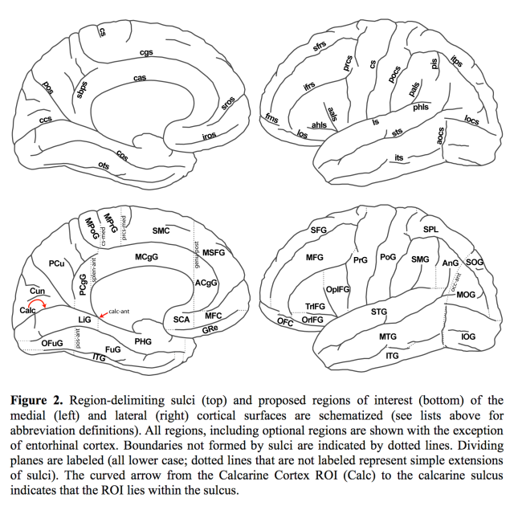

|
As part of the Mindboggle project, Neuromorphometrics helped to develop a new cortical parcellation (anatomical labeling) protocol, the Desikan-Killiany-Tourville protocol. This DKT protocol was used by trained personnel to manually label 101 T1-weighted MRI brain volumes as part of Mindboggle's initial NIH-funded R01 grant. Neuromorphometrics also developed a second whole-brain labeling protocol [.pdf]* that has also been used to manually label T1-weighted MRI brain volumes as part of another NIH-funded grant. In order to ensure that these anatomical labels are meaningful and useful to the neuroscientific community, we conducted a survey about the label definitions during its development. Jason Tourville and Ruth Carper derived the protocol from some of the most prominent parcellation methods established by other research groups. After a detailed review of these methods, including their anatomic validity and consistency across brains, they consolidated the best approaches into a single parcellation protocol, which currently has 62 cortical regions:
*Please do not copy or distribute any portion of the protocol without permission from Jason Tourville, and email any questions to Dr. Tourville: jtour [at] cns.bu.edu  
|
|


{kind=link}